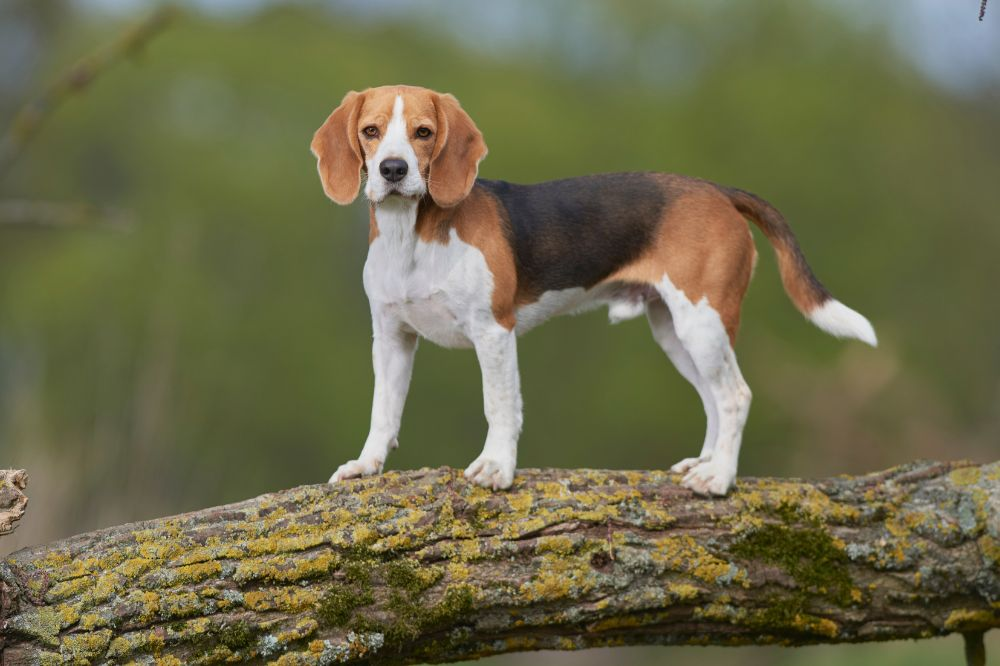
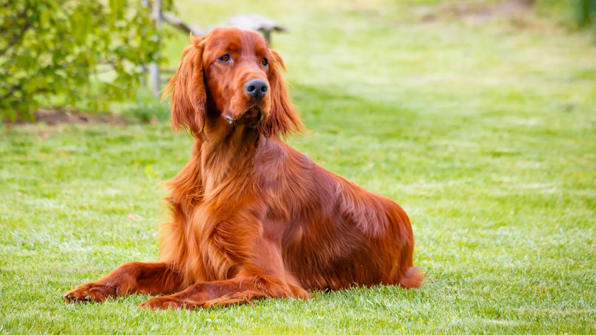

Torna indietro
Di che razza è Aria
Aria e un incrocio tra un Beagle e forse un Setter

Il Beagle è un cane da caccia,gentile,curioso e mantiene una buona dose di energia anche da adulto. Ha aun caratere molto caraggioso
èd è un cane molto attivo e resiste

Il setter è un tipo di cane da caccia, usato sia da riporto che da punta per uccelli come quaglie, fagiani e beccaccini.
I Setter inglesi sono cani amichevoli e di buon carattere che si legano e integrano bene in famiglia.Sono cani vivaci e socievoli che
annunciano l'arrivo degli estranei ma li acoglieranno come se li conoscesserero da tutta una vita.